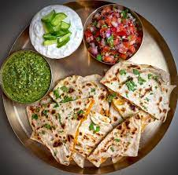

Bolani

Bolani is an afghani traditional food
ingredients
- potato
- leek
- flour
- vegetables
Steps
- you need to prepare the flour
- you need to prepare the vegetables
- then you need to prepare the potato
- you need to mix the vegetables with potato
- make the flour in circle shapes
- fill in the circles with the potatoes
- put them in to the hot oil to be cooked